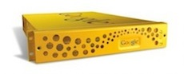

What is Molly?
Molly is a framework for the rapid development of information and service portals targeted at mobile internet devices. The framework follows a “batteries included” philosophy, featuring a wide variety of applications and connectors to common and standards-based systems including the Sakai Virtual Learning Environment.
Why choose Molly?
In short, it's Free, easy to deploy, has many features out-of-the-box and relies on proven, low-risk technologies. Oh, and it's award winning!
Molly works with any mobile device
Molly is a web-based application framework targeting all phones, 'smart' or otherwise. Native applications can only target a few classes of device, leaving a large number of potential users unable to use the service.
Wherever possible, Molly detects the device being used and tailors the page to match the phone's capabilities.
Out-of-the-box support for many data providers and systems
To help you get started, Molly has built-in connectors for various interfaces and systems, including LDAP, Z39.50, Google Search Appliances, OpenStreetMap, and even real-time bus, rail and Tube information.
Open-source license
Molly is distributed under the terms of the Apache License v2 and actively encourages contributions from any and all institutions.
Being open-source, you are not tied to maintenance contracts with a third party, nor need you rely upon them to satisfy your use cases.
Unlike many proprietary solutions, Molly allows you to keep your institutional data on-site without the risk of data being exposed by a third party.
Molly as implemented at the University of Oxford.
Standards compliant and native app-ready
As well as delivering standards-compliant HTML5 alongside a fully RESTful XML, JSON and YAML API, Molly acts as a powerful data aggregator. This allows you or any third-party developer to create a native application or remix your data to suit any need.
The support of an open-source community
Molly is being developed by leading higher-education institutions who are always willing to support others in getting started.
Speak to someone about Molly
If you'd like more information, join the IRC channel ask on one of the mailing lists, or drop the Mobile Oxford team a message via mobileoxford@oucs.ox.ac.uk.